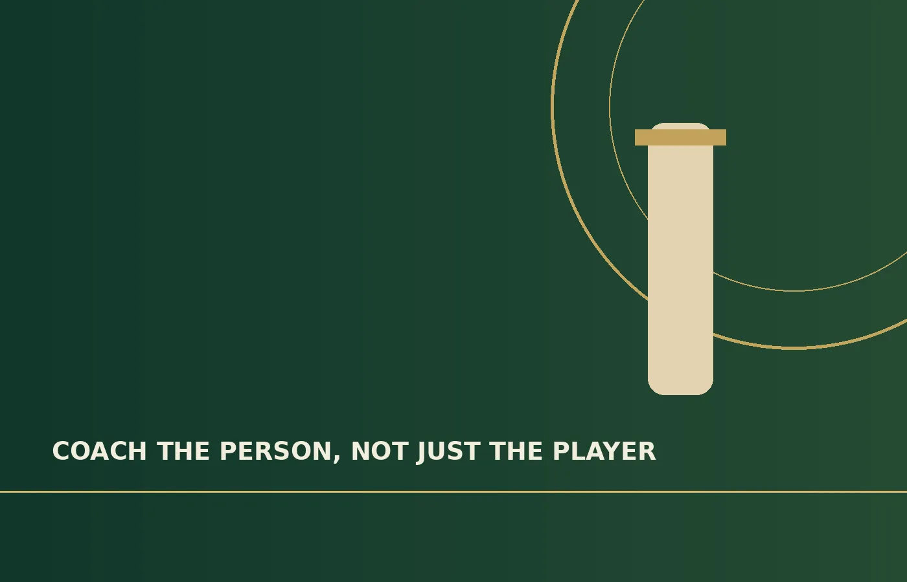

Wickets
Penrith Cricket Club, 2023–24 season.
PENRITH • CRICKET • COACHING
I'm James Lennox, a Penrith Cricket Club player and aspiring coach. I want to help the next generation develop their skills, confidence and love of the game.
AT A GLANCE
Penrith Cricket Club, 2023–24 season.
Personal best recorded for the 2023–24 season.
First-year Diploma of Social Science student.
MY PURPOSE
Great coaching starts with seeing the person behind the player. My ambition is to help young and current cricketers become the best versions of themselves—on and off the field.
My playing experience has taught me the importance of preparation, patience, teamwork and learning from setbacks. I hope to carry those lessons into coaching.
Read my coaching philosophy